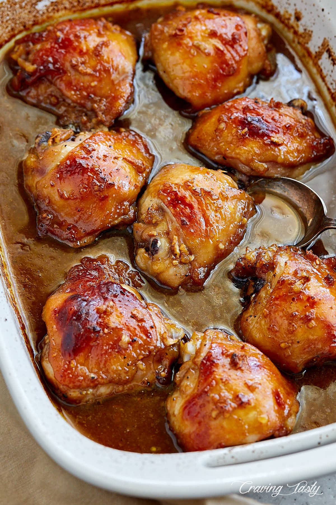

Killer Chicken Thigh Marinade

There are different ways to cook chicken thighs, but I've got to tell you, this is one of my favorite recipes because of its simplicity and the killer chicken thigh marinade it uses. This marinade has amazing Asian flavors, but also makes use of Worcestershire sauce and maple syrup that add sweetness and additional flavors and balance.
Ingredients
- 8 bone-in, skin-on chicken thighs (about 4 lbs)
- 2 Tbsp olive oil
- 1 Tbsp sesame oil
- 4 Tbsp low sodium soy sauce
- 1 Tbsp Worcestershire sauce
- 2 Tbsp lemon juice (or lime juice)
- 5 Tbsp maple syrup (or honey)
- 6 cloves garlic (minced)
- 1/2 tsp black pepper (freshly ground)
- 2 tsp kosher salt (plus more to taste)
Steps
- Mix all ingredients for the marinade together in a large bowl or a plastic Ziploc bag. Add the chicken and make sure that every piece is covered evenly. Marinate in a fridge for at least 30 minutes to 2 hours or, better yet, overnight.
- Preheat oven to 450 degrees F.
- Place the chicken and all of the marinade in a baking dish. Bake uncovered at 450 degrees F for 25-30 minutes with the skin side up, until the internal temperature reaches 165°F. To make sure the chicken tops are nicely browned and do not dry out, baste the chicken thighs in the juices and marinade about 15-20 minutes into baking.
- To get a nicely browned, crisped up skin, turn on the broiler for 2-3 minutes when the thighs are almost done cooking. Monitor broiling very closely as the tops may burn if broiled for too long.